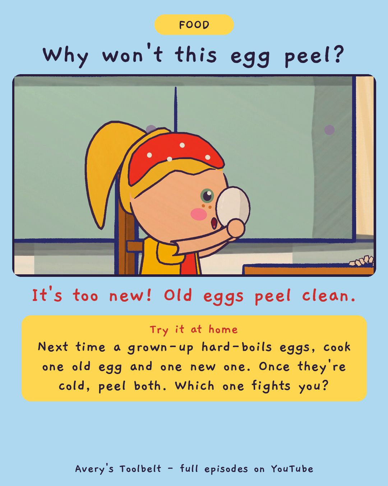

The LunchboxSoy-Braised Eggs With a Friend
那個便當

Why won't this egg peel?
It's too new! Old eggs peel clean.
Try it at home
Next time a grown-up hard-boils eggs, cook one old egg and one new one. Once they're cold, peel both. Which one fights you?
Free printable coloring page (PDF) Watch the full episode on YouTubeAbout this episode, for grown-ups
Every Wednesday Kai brings his lunch in a metal box from home - a biandang, with rice, soft brown meat, a yellow pickle and half a brown egg. Avery wants to know everything about it, so she asks. And asks. Until one Wednesday the box doesn't come.
Avery works out why, and says the word for how she feels. Then she asks Kai something different: can you teach me how to make the egg? Meanwhile Gus is looking for a lunch box with a lid that clicks - and tries a shoebox, a drawer and a hat.
What children find out: old eggs from the back of the fridge peel clean, and new ones fight you. And a soy-braised egg drinks the cool sauce slowly, all night - you can't make it hurry, you can only wait.
For grown-ups: an episode about how curiosity can turn into something you do to somebody, and about a child naming her own mistake. "I feel ashamed." Mom doesn't tell her she shouldn't.